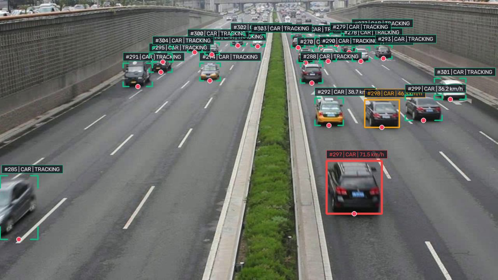
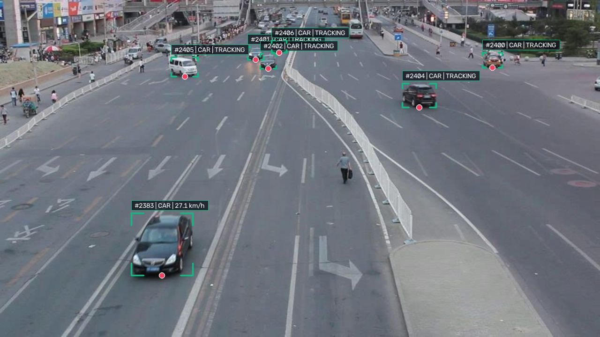
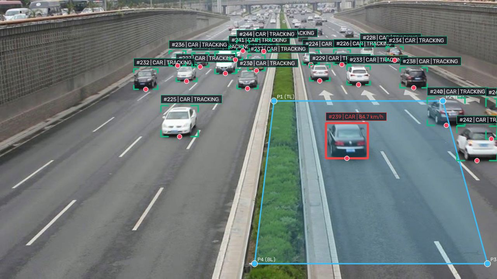

Abstract—Highway speed enforcement still runs on expensive roadside radar and LiDAR rigs, even though cities already have thousands of CCTV poles staring down at the exact same asphalt. Turning a single monocular surveillance feed into a speed gun sounds trivial until you actually try it. Perspective foreshortening stretches distances toward the horizon, tall vehicles pull bounding-box centers meters above the road plane, and buffered camera pipelines turn live telemetry into stale guesswork. This paper presents ARGUS, a software-only traffic telemetry suite that runs on pre-existing RTSP and video streams without new roadside hardware. ARGUS pairs an overhead-adapted YOLOv8n detector fine-tuned on 82,085 UA-DETRAC frames with decoupled stream ingestion, bottom-center tire-contact projection through a 3×3 Direct Linear Transform (DLT) homography matrix, and least-squares velocity regression over rolling trajectory windows. On 16,001 unseen UA-DETRAC validation frames, the adapted detector reaches 0.765 mAP@50 overall (0.941 on cars, 0.924 on buses) at 1.3 ms per frame on an NVIDIA Tesla T4. Locally, switching dense multi-lane tracking to a lightweight IOU path pushes throughput from 2.1 FPS to 24.8–44.2 FPS on an RTX 4060 Laptop GPU, while holding synthetic trajectory error to 0.000 km/h and matrix projection error below 1.35×10−14 m.
Index Terms—Monocular Speed Estimation, Planar Homography, YOLOv8, UA-DETRAC, Real-Time Telemetry, Computer Vision
Municipal traffic authorities already own the cameras. Every major highway gantry and urban junction carries an RTSP or ONVIF video feed running twenty-four hours a day, yet speed enforcement still demands dedicated Doppler radar or roadside LiDAR installations [1].
The catch is simple: pixel math lies. A naive vision script that divides bounding-box pixel movement by wall-clock elapsed time fails on three fronts almost immediately. First, camera tilt compresses pixels near the horizon—one pixel of bounding-box wobble near the top of the frame easily translates to a quarter-meter jump on the road, so receding vehicles appear to accelerate as they drive away from the lens. Second, standard object detectors trained on eye-level consumer photos misread overhead silhouettes and report 2D box centers that sit on vehicle roofs rather than tires, introducing severe parallax error on buses and trucks [6]. Third, OpenCV's default FIFO capture buffer queues old frames whenever inference dips—meaning a network stall makes the vision loop calculate speed across stale timestamps rather than true packet arrival times.
Wait, zoom out for a second: fixing only the neural network does not fix the physics, and fixing the geometry alone breaks if the frame clock is lying. Most academic pipelines stop at offline video scripts or burn heavy feature-embedding CNNs on every detected crop [4], stalling real-time throughput the moment traffic crosses twenty vehicles per frame.
ARGUS solves the full chain inside one self-contained runtime. Basically, we treat the surveillance feed as a calibrated metric sensor only after three invariants hold: frame capture is decoupled from inference, every vehicle is anchored strictly at its bottom-center tire contact point on the Z = 0 asphalt plane, and velocity comes from least-squares regression across deduplicated frames rather than noisy endpoint differences.
The concrete contributions of this work are:
1) Overhead CCTV Adaptation: Converting 60 UA-DETRAC sequences (82,085 frames) via zero-copy NTFS hard links and fine-tuning YOLOv8n to 0.941 car and 0.924 bus mAP@50 [2], [3].
2) Drift-Free Planar Physics: Combining 4-point DLT homography (< 10−13 m matrix error) with deterministic media timestamps, frame deduplication, and least-squares velocity fitting [5].
3) Exception-First Operator Suite: An interactive FastAPI + WebSocket console featuring a 1:1 pixel-locked draggable 4-corner Speed Zone, live camera switching, and asynchronous SQLite/PostgreSQL evidence persistence.
ARGUS splits perception, geometry, rendering, and persistence across isolated execution stages so disk I/O or slow network frames never stall the 25–40 FPS inference loop (Fig. 1).
Frame grabbing lives inside an isolated daemon thread (UniversalCCTVStream) with OpenCV's internal buffer clamped to a single frame. On RTSP streams, TCP transport and nobuffer flags strip UDP smear and decoder queues; on arrival, the reader stamps each frame immediately.
Here's the catch though—during testing on recorded MP4 benchmarks, wall-clock time.monotonic() exposed two subtle failures. First, the vision loop occasionally polled faster than the 25 FPS source video, ingesting duplicate frame_id frames with zero spatial change. Second, OS sleep jitter distorted Δt between consecutive frames. Deduplicating by frame_id inside the vision loop and switching recorded MP4 files to a deterministic media clock (frame_id / nominal_fps, exact 40.0 ms at 25 FPS) while retaining monotonic hardware clocks for live RTSP/webcams fixed both bugs at the root.
Standard COCO weights expect eye-level side profiles, whereas highway cameras stare down at hoods and roofs. We ingested the full 9.23 GB UA-DETRAC benchmark (bratjay/ua-detrac-orig) [2] and normalized all 60 annotated XML sequences—82,085 labeled frames across car (car/van → 0), bus (1), and others (2)—into YOLO ratios over [0.0, 1.0].
To protect a 17 GB free laptop SSD budget from duplicating 83,791 images, organize_detrac_split.py links an 80/20 sequence-disjoint split (48 train sequences / 67,790 images; 12 validation sequences / 16,001 images) using zero-copy NTFS hard links locally and Linux symlinks in the cloud. Splitting by sequence rather than random frame shuffling prevents data leakage across adjacent 25 FPS frames. In inference, boxes smaller than 28×24 pixels are filtered out to stop horizon noise from cluttering the HUD.
DeepSORT with a MobileNet appearance embedder [4] tracks occluded targets well, but running per-crop CNN inference on 20–70 simultaneous highway cars acts like a slow toll booth in front of the entire pipeline. On an RTX 4060 Laptop GPU, CPU MobileNet dropped throughput to 2.1 FPS (443.7 ms/frame), and even GPU-pinned MobileNet stayed at 5.5 FPS (180.3 ms/frame)—causing the Kalman filter to lose fast vehicles between ticks. Exposing a use_embedder flag lets dense multi-lane deployments switch to spatial IOU association (SimpleFallbackTracker), lifting pipeline throughput past 24.8 FPS live and 44.2 FPS raw.
Rather than projecting bounding-box centers, ARGUS anchors every vehicle at its bottom-center tire contact pixel (u, v) = ((x1 + x2)/2, y2), pinning measurements to the Z = 0 asphalt plane. Four operator-placed corners (P1..P4) map via a 3×3 homography matrix H to real-world metric coordinates (W, L) in meters [5]:
Only anchors passing a ray-casting point-in-polygon check enter a 15-frame trajectory deque (requiring N ≥ 8 samples). Early versions divided endpoint displacement by total elapsed time, which amplified perspective foreshortening whenever a vehicle neared the top horizon edge P1–P2—making speed climb steadily as cars moved away. Replacing endpoint subtraction with ordinary least-squares linear velocity regression across all N samples in the window:
followed by a 5-sample median filter and a 220 km/h physical anomaly cap, suppresses endpoint noise by √N and keeps speeds flat from entry to exit.
Dense traffic screens fail operators when every compliant sedan shouts for attention. ARGUS renders nominal cars with muted emerald (#10B981) 20% corner brackets, switches to full amber (#F59E0B) at ≥ 85% of the limit, and escalates to solid crimson (#EF4444) at ≥ 100%, keeping a 5 px rose tire dot (#F43F5E) under every vehicle. Speeding events enqueue into an asyncio.Queue worker (15 s per-track cooldown) that writes JPEG crops to disk, inserts rows into PostgreSQL with automatic local SQLite fallback, and pushes JSON alerts over WebSockets without blocking frame encoding.
Fine-tuning YOLOv8n (129 layers, 3.01M parameters, 8.2 GFLOPs) for 30 epochs on a Kaggle Tesla T4 (14,912 MiB VRAM, batch 32, AMP FP16) converged cleanly in 5.413 hours across 67,790 training frames. Note that Kaggle's remote FUSE storage throttled reads to 2.1 MB/s; locally on NVMe SSD with an RTX 4060, 6-epoch transfer fine-tuning at 25% frame fraction reached 0.565 mAP@50 in ~20 minutes and lifted detections on the sample_traffic.mp4 smoke clip by 3.25× (52 detections vs. 16 from baseline COCO weights over 120 frames). Table I reports the full 30-epoch validation metrics across all 16,001 unseen frames (124,562 instances).
| Class | Images | Instances | Precision | Recall | mAP@50 | mAP@50-95 |
|---|---|---|---|---|---|---|
| All | 16,001 | 124,562 | 0.792 | 0.728 | 0.765 | 0.600 |
| Car | 15,079 | 112,239 | 0.875 | 0.913 | 0.941 | 0.708 |
| Bus | 8,683 | 11,498 | 0.835 | 0.895 | 0.924 | 0.785 |
| Others | 825 | 825 | 0.664 | 0.377 | 0.431 | 0.308 |
Notably, transfer learning already hit 0.753 mAP@50 at Epoch 1 and peaked at 0.766 at Epochs 23 and 25, while Tesla T4 FP16 validation ran at 1.3 ms inference per image. The lower others score reflects label scarcity—825 total instances (< 0.7% of validation objects) spread across mixed utility vehicles.
Standalone verification (test_homography.py) confirms exact DLT inversion and steady physics under noise (Table II). Forward corner projection error stays at 1.353×10−14 m, inverse pixel reprojection error reads 0.000 px, and a simulated 60.00 km/h vehicle is recovered at exactly 60.00 km/h (0.000 km/h error). Injecting ±1.5 px uniform bounding-box jitter onto a 50.0 km/h trajectory yields a mean of 48.94 km/h with a standard deviation of 1.76 km/h.
| Benchmark / Metric | Observed Result | Hardware / Condition |
|---|---|---|
| DLT Forward / Inverse Error | 1.353×10−14 m / 0.000 px | 4-Point Trapezoid (CPU) |
| Simulated 60 km/h Trajectory | 60.00 km/h (0.000 err) | Least-Squares + Median |
| ±1.5 px Jitter on 50 km/h | 48.94 ± 1.76 km/h | 15-Frame Window |
| CPU MobileNet DeepSORT | 2.1 FPS (443.7 ms) | 6-Lane Expressway (70 trks) |
| GPU MobileNet DeepSORT | 5.5 FPS (180.3 ms) | RTX 4060 (21 trks) |
| Fast IOU Tracker (Live API) | 24.8 FPS (44.2 FPS raw) | RTX 4060, Δt = 40.0 ms |
Converting local UA-DETRAC sequences into 25 FPS MP4 streams lets us stress-test ARGUS on both a 6-lane divided expressway (MVI_40191, Fig. 2) and an unseen 8-lane urban intersection (MVI_40712, Fig. 3). On the 6-lane expressway at 24.8 FPS (Δt = 40.0 ms), ARGUS simultaneously tracks ~20 vehicles across both carriageways and cleanly separates nominal traffic (36.2–39.1 km/h), warnings (46.5 km/h at a 50 km/h limit), and violations (71.5–75.8 km/h). Switching live via POST /api/camera to the unseen urban intersection runs at 24.7 FPS and tracks steady 27.1–28.6 km/h cross-traffic while ignoring pedestrians.

MVI_40191) showing green corner brackets (36.2–38.7 km/h), amber warning (46.5 km/h), and crimson violation (71.5 km/h) on a 50 km/h limit.
MVI_40712) at 24.7 FPS, tracking vehicle #2383 steadily at 27.1 km/h while ignoring pedestrians.An early UI bug stretched the calibration SVG over a letterboxed container, offsetting draggable corner handles from the video pixels. Locking both #cctvStream and #calibrationSvg inside a strict 16:9 wrapper and keeping the four corner grips (P1–P4) always interactive directly over the footage (Fig. 4) allows instant live recalibration with zero restart. On the audit side, replacing cramped raw cards with a two-tab panel—Violations (with click-to-zoom crops backed by SQLite persistence, verified at 14 stored rows during a live run) and Live Log (tabular per-vehicle telemetry with one-click CSV export)—makes enforcement logs immediately readable.

Several practical engineering lessons fell out during integration. First, we caught a subtle Python import-binding bug in backend/worker.py: importing AsyncSessionLocal by value at module load kept pointing the background worker at an offline PostgreSQL pool even after init_db() reassigned the module variable to SQLite. Referencing the database module dynamically resolved the silent write failures immediately—we caught it in local testing itself before any live run.
Second, hardware telemetry depends heavily on feeding the right clock to the right stream. Monotonic wall-clock arrival stamps are essential for live jittery RTSP links, whereas recorded benchmark MP4s need deterministic frame indices so scheduler delays never mimic vehicle acceleration. Finally, three honest limitations remain: speed accuracy depends on operators entering accurate metric width and length for the 4-point road trap (visual validation against LiDAR ground truth such as BrnoCompSpeed [1] is queued next), fast IOU association trades appearance re-identification under heavy cross-lane occlusion for 44 FPS speed, and the UA-DETRAC taxonomy omits Indian regional vehicle classes such as auto-rickshaws and dense two-wheelers.
Hardware is rarely the hardest bottleneck in smart-city infrastructure; geometry and timing discipline are. Existing roadside cameras already hold enough visual signal to measure vehicle velocity in meters per second, provided the software stops trusting bounding-box centers, fixes camera buffer clocks, and lets operators anchor the ground plane directly on the live feed. ARGUS turns that thesis into a 25–40 FPS operational console with verifiable DLT math and auditable evidence logs. The real shift is simple: instead of mounting new radar poles at every junction, traffic enforcement becomes a software calibration layer over the glass already hanging above the road.
The author thanks the maintainers of the UA-DETRAC benchmark, Ultralytics, and the Sahyadri College of Engineering and Management Dept. of CSE(AIML) for computational and academic support.